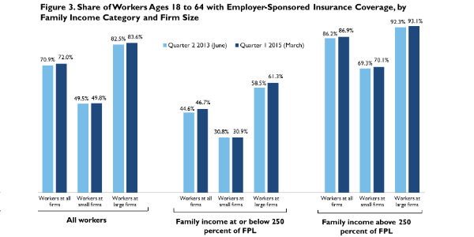

|  |
|
||
Employer-Sponsored Insurance Continues to Remain Stable under the ACA: Findings from June 2013 through March 2015
Fredric Blavin, Adele Shartzer, Sharon K. Long, and John HolahanJune 3, 2015
Before the changes introduced under the Affordable Care Act (ACA), there had been an ongoing decline in employer sponsored insurance (ESI) coverage. For example, between 2000 and 2012, ESI coverage rates for nonelderly workers (ages 18 to 64) fell 11 percent, from 76.9 percent to 69.4 percent. Among workers in firms with fewer than 50 employees, coverage rates fell 17 percent, from 61.1 percent to 52.4 percent.1 Some have argued that the changes introduced under the ACA would accelerate this trend as the greater availability of coverage outside of work would make it easier for employers to stop offering coverage.2 The subsidies provided by the ACA, along with the availability of Medicaid for most adults up to 138 percent of the federal poverty level (FPL) in states that expanded Medicaid, may lead to changes in employer decisions to offer coverage and employee decisions to take up those offers. If ESI erodes as more people take up other coverage, the government cost of the ACA will increase, potentially to a point at which the cost of subsidies and expanded Medicaid coverage may make the law unaffordable.
This brief updates a previous study published in Health Affairs (Blavin et al. 2014) that examines changes in ESI coverage, offer, and take-up rates from June 2013 (just before the roll out of major provisions of the ACA) to September 2014, including six additional months in the study period (through March 2015). Though it is too soon to know the long-term course of ESI, we are now 18 months into the implementation of the ACA. As such, we should begin to see a drop off in employer coverage if such a drop off were to occur. Similar to the findings published in Health Affairs, we continue to find no change in ESI offer rates, take-up rates, or overall ESI coverage under the ACA.
Background
Though some are concerned about the ACA creating incentives for firms to drop ESI coverage and for workers to seek coverage from the ACA Marketplaces or through newly expanded Medicaid, there are several reasons why ESI should remain stable and possibly increase under the ACA. First, workers receive substantial benefits through the tax system from obtaining coverage through employers. This in turn gives employers a strong financial incentive to offer coverage, though these incentives are greater for workers with higher incomes because of higher marginal tax rates. With the exception of the “Cadillac tax,” an excise tax on high-cost health plans that goes into effect in 2018, nothing in the ACA changes the tax treatment of ESI. Thus, the strong financial incentives for employers to offer coverage are maintained.
Second, there is a new requirement that employers with more than 50 workers provide ESI that meets certain standards or face a penalty, if at least one of their full-time employees received subsidies for the purchase of Marketplace coverage. Though the employer requirement should help maintain employer offers, the final rules were delayed until January 20153 and 2016 (for smaller firms) and thus should have little effect so far.
Third, tax credits are available for small firms, but the take-up of these credits appears fairly limited at this point. Similarly, availability of small-business health options program Marketplaces offer the promise of making it easier for employers to obtain coverage, but these too have been difficult to get off the ground.
Finally, under the individual mandate, individuals are required to have coverage or pay a tax penalty. Employers in their recruitment of workers may find it increasingly advantageous to offer coverage. The combination of the individual mandate and the tax exclusion of employer contributions to health insurance create powerful incentives for the continuation of ESI.
What We Did
Building on the earlier Health Affairs study, we use the Health Reform Monitoring Survey (HRMS) to examine changes in ESI coverage, take-up, and offer rates in early March 2015 (just after the implementation of the ACA’s major coverage expansions) relative to June 2013 (just before implementation). The overall sample size for the HRMS is roughly 7,500 nonelderly adults per quarter. The HRMS provides early feedback on changes under the ACA to complement the more robust impact assessments that will be possible as federal survey data become available.4
In this analysis, we define “workers” as nonelderly adults who report working for pay or who are self-employed. The HRMS asks adults who do not report having ESI coverage whether their employer or a family member’s employer offers health insurance that could cover the respondent. Adults who report having ESI coverage are presumed to have an offer through their own or a family member’s employer. The ESI take-up rate is defined as the share of workers who report ESI among all workers who have an offer of coverage. For both ESI coverage and offers, the source within the family—the respondent or another worker—is unobservable in the HRMS.
We analyze these outcomes among key subpopulations of workers, including by firm size (fewer than 50 workers versus 50 workers or more) and by family income (below 250 percent of FPL versus 250 percent or more of FPL, divided as such to ensure sufficient sample size). We exclude workers who do not report work status or firm size from the analysis.
Though each round of the HRMS is weighted to be nationally representative, it is important in examining changes over time that we base our estimates on comparable samples. For example, if the share of those with ESI grows simply because more respondents were older or from higher income groups in one round of the survey, it would be incorrect to associate such a change with the ACA coverage provisions. As such, we report regression-adjusted trends that correct for the effects of observed shifts in the characteristics of the survey respondents across quarters of the survey.5
What We Found
Figures 1–3 present ESI offer, take-up, and coverage rates, respectively, for nonelderly workers in June 2013 and March 2015 overall and by family income and firm size. As shown in figure 1, there were no statistically significant changes in ESI offer rates over the study period. Offer rates stayed roughly constant at 82 to 83 percent for all workers, 61 to 62 percent for workers in small firms, and 94 to 95 percent for workers in large firms. This stability also holds true when we look at workers above and below 250 percent of FPL. For workers with family income less than 250 percent of FPL, we find small increases in offer rates in all firm size categories, but none of these are statistically significant.
ESI take-up rates (figure 2) also remain unchanged among workers with an ESI offer: about 86 to 87 percent for all workers, 81 to 82 percent for workers in small firms, and 88 to 89 percent for workers in large firms. There were no statistically significant changes in take-up rates among workers above or below 250 percent of FPL. However, there was a small increase in take-up among workers below 250 percent of FPL that, although not statistically significant (2.8 percentage points, p-value = .22), is suggestive of increased take-up under the ACA.
ESI coverage rates among workers also remained unchanged. ESI remained at 71 to 72 percent for all workers, 49 to 50 percent for workers in small firms, and 83 to 84 percent for workers in large firms. As with ESI offer and take-up rates, there were no statistically significant changes in ESI coverage rates among workers below or above 250 percent of FPL. However, as with take-up, there was a small increase in ESI coverage among workers below 250 percent of FPL that, although not statistically significant (2.1 percentage points, p–value = .21) is also suggestive of increased ESI. This increase appears to be driven by potential coverage gains among workers in large firms making below 250 percent of FPL, where coverage increased 2.8 percentage points to 61 percent (p-value = .22).
Looking beyond workers to ESI coverage among all nonelderly adults, we find ESI coverage rates were also stable (figure 4). ESI coverage rates remained unchanged at 60 percent for all nonelderly adults, 33 to 34 percent for nonelderly adults above 250 percent of FPL, and 83 to 84 percent for nonelderly adults above 250 percent of FPL.
Conclusion
As with our previous paper, we found no evidence that ESI offer, take-up, and coverage rates fell from June 2013 to March 2015 overall for workers below 250 percent of FPL or for workers in in small firms. These results likely reflect the effects of the individual mandate as well as strong tax incentives to obtain coverage from employers. Because of those tax incentives, most workers are financially better-off if they obtain coverage through employment. Consequently, employers now have increased incentives to maintain their offers for coverage and workers have increased incentives to take up that coverage when it is available. The ACA’s employer mandate for large firms, when it is implemented, should add to these incentives, though as shown in figure 1, offer rates in large firms are already well over 90 percent.
These findings are consistent with the findings of several microsimulation studies conducted before the ACA and with experiences in Massachusetts under its 2006 reform initiative. For example, the Congressional Budget Office predicted only a small decline in ESI: 6 million by 2016, or a reduction of 3.7 percent, out of 161 million people that would have had coverage without the ACA in 2016. RAND estimated that, relative to a no-reform scenario, the ACA would lead to a net increase of 8.0 million people with ESI (Eibner et al. 2010). Other microsimulation models—for example, that of the Lewin Group (2010) and the Urban Institute (Blumberg et al. 2012)—predict changes in overall ESI within the range of the Congressional Budget Office’s and RAND’s estimates. Finally, experience from Massachusetts suggests that an individual mandate along with a relatively weak employer mandate actually increased the rate of ESI coverage (Gabel et al. 2008). Other early estimates of ESI changes under the ACA from Gallup and RAND surveys also find ESI is holding steady (Levy 2015) or increasing (Carman and Eibner 2015) among the nonelderly population. Thus, findings to date all suggest that ESI should stay relatively stable under the ACA.
References
Blavin, Fredric, Adele Shartzer, Sharon K. Long, and John Holahan. 2014. “An Early Look at Changes in Employer-Sponsored Insurance under the Affordable Care Act.” Health Affairs 34 (1): 170–77.
Blumberg, Linda, Matthew Buettgens, Judith Feder, and John Holahan. 2012. “Implications of the Affordable Care Act for American Business.” Washington, DC: Urban Institute.
Carman, Katherine, Christine Eibner, and Susan Paddock. 2015. “Trends In Health Insurance Enrollment, 2013–15.” Health Affairs May 2015.
Congressional Budget Office. 2014. “Insurance Coverage Provisions of the Affordable Care Act—CBO’s February 2014 Baseline.” Washington, DC: Congressional Budget Office.
Eibner, Christine, Federico Girosi, Carter C Price, Amado Cordova, Peter S. Hussey, Alice. Beckman, and Elizabeth A. McGlynn. 2010. “State Health Insurance Exchanges: Implications for Health Insurance Enrollment, Spending, and Small Businesses.” Santa Monica, CA: RAND Corporation.
Gabel, Jon R., Heidi Whitmore, Jeremy Pickreign, Will Sellheim, K. C. Shova, and Valerie Bassett. 2008. “After the Mandates: Massachusetts Employers Continue to Support Health Reform as More Firms Offer Coverage.” Health Affairs 27 (6): w566–75.
Holtz-Eakin, Douglas, and Cameron Smith. 2010. “Labor Markets and Health Care Reform: New Results.” Washington, DC: American Action Forum.
Levy, Jenna. 2015. “In U.S., Uninsured Rate Dips to 11.9% in First Quarter.” Washington, DC: Gallup.
Lewin Group. 2010. “Patient Protection and Affordable Care Act (PPACA): Long-term Costs for Governments, Employers, Families, and Providers.” Falls Church, VA: Lewin Group.
Long, Sharon K., Genevieve M. Kenney, Stephen Zuckerman, Dana E. Goin, Douglas Wissoker, Fredric Blavin, Linda J. Blumberg, Lisa Clemans-Cope, John Holahan, and Katherine Hempstead. 2014. “The Health Reform Monitoring Survey: Addressing Data Gaps to Provide Timely Insights into the Affordable Care Act.” Health Affairs 33 (1): 161–67.
About the Series
This brief is part of a series drawing on the HRMS, a quarterly survey of the nonelderly population that is exploring the value of cutting-edge Internet-based survey methods to monitor the ACA before data from federal government surveys are available. The briefs provide information on health insurance coverage, access to and use of health care, health care affordability, and self-reported health status, as well as timely data on important implementation issues under the ACA. Funding for the core HRMS is provided by the Robert Wood Johnson Foundation and the Urban Institute.
For more information on the HRMS and for other briefs in this series, visit www.urban.org/hrms.
About the Authors
Fredric Blavin is a senior research associate, Adele Shartzer is a research associate, Sharon K. Long is a senior fellow, and John Holahan is an Institute Fellow in the Urban Institute’s Health Policy Center.
Notes 1 Urban Institute calculations from the 2001 and 2013 Current Population Surveys. 2 For example, see Holtz-Eakin and Smith (2010). 3 Employers with plan years that do not start on January 1 will be able to begin compliance with employer responsibility at the start of their plan years in 2015. See “Fact Sheet: Final Regulations Implementing Employer Shared Responsibility under the Affordable Care Act for 2015,” US Department of Treasury, accessed May 29, 2015, http://www.treasury.gov/press-center/press-releases/Documents/Fact%20Sheet%20021014.pdf. 4 Benchmarking of the HRMS data against federal survey data is provided in Long et al. (2014). 5 Specifically, we control for the variables used in the poststratification weighting of the KnowledgePanel (the Internet-based survey panel that underlies the HRMS) and the poststratification weighting of the HRMS. These variables are sex, age, race and ethnicity, language, education, marital status, whether any children are present in the household, household income, family income as a percentage of FPL, homeownership status, Internet access, urban or rural status, and census region. In this analysis, we also control for citizenship status and participation in the previous quarter’s survey (i.e., whether the respondent completed the survey in the previous quarter, was sampled in the previous quarter but did not complete the survey, or was not sampled in the previous quarter).
|

 |
 |
 |